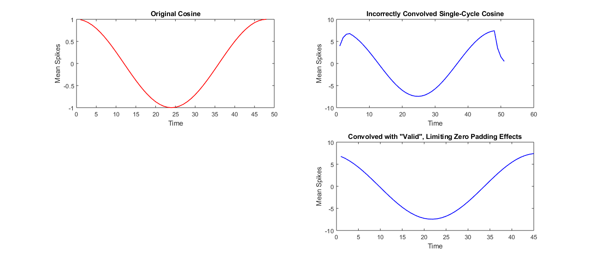

Contents
HW # 3 - Question 2 - Math Tools - Matthew DeVerna
clear all close all
Question 2: Convolution in MATLAB
% Suppose that you have a LSI system with impulse response: r = [4, 2, 1, 0.5] ; % Because it is a LSI system, the response to any input vector 'in' can be % computed as a convolution.
A) Compute Responses to eight 8-dimensional impulse vectors ...
...using MATLABs 'conv()' function: out = conv(in, r). How do the responses compare to the convolution formula given in class?
% Create eight 8-dim impulse vectors impulse1 = [1,0,0,0,0,0,0,0] ; impulse2 = circshift(impulse1,1) ; impulse3 = circshift(impulse2,1) ; impulse4 = circshift(impulse3,1) ; impulse5 = circshift(impulse4,1) ; impulse6 = circshift(impulse5,1) ; impulse7 = circshift(impulse6,1) ; impulse8 = circshift(impulse7,1) ; % Find the convolution response with r response1 = conv(impulse1,r) ; response2 = conv(impulse2,r) ; response3 = conv(impulse3,r) ; response4 = conv(impulse4,r) ; response5 = conv(impulse5,r) ; response6 = conv(impulse6,r) ; response7 = conv(impulse7,r) ; response8 = conv(impulse8,r) ; % Specifically, compute the matrix that represents the linear system's response. response_matrix = [response1;response2;response3;response4;response5;response6;response7;response8] % What is the size and organization of this matrix? SizeAndOrganization = {'Each column of this matrix looks like a copy of r with added zeros' 'Since we are multiplying by an impulse vector (i.e. 1"s and zeros),' 'we get the vector back as we do a sliding dot product. Zeros fill' 'all of the locations because the conv() function''s default boundary' 'handling is to return all possible results by including zeros where' 'elements of the two vectors do not overlap.'}
response_matrix =
Columns 1 through 7
4.0000 2.0000 1.0000 0.5000 0 0 0
0 4.0000 2.0000 1.0000 0.5000 0 0
0 0 4.0000 2.0000 1.0000 0.5000 0
0 0 0 4.0000 2.0000 1.0000 0.5000
0 0 0 0 4.0000 2.0000 1.0000
0 0 0 0 0 4.0000 2.0000
0 0 0 0 0 0 4.0000
0 0 0 0 0 0 0
Columns 8 through 11
0 0 0 0
0 0 0 0
0 0 0 0
0 0 0 0
0.5000 0 0 0
1.0000 0.5000 0 0
2.0000 1.0000 0.5000 0
4.0000 2.0000 1.0000 0.5000
SizeAndOrganization =
6×1 cell array
{'Each column of this matrix looks like a copy of r with added zeros' }
{'Since we are multiplying by an impulse vector (i.e. 1"s and zeros),'}
{'we get the vector back as we do a sliding dot product. Zeros fill' }
{'all of the locations because the conv() function's default boundary'}
{'handling is to return all possible results by including zeros where'}
{'elements of the two vectors do not overlap.' }
B) How does MATLAB's conv function handle boundaries?
% Matlab handles boundaries differently depending on the additional % argument that you provide it. % 'full' (Default setting) --> Returns the entire result set, regardless of % whether or not elements are fully covered. This means that it % includes zeros where elements are not "covered" (i.e. in dot product % instances when all elements in a vector do not have an overlapping % element in the other vector. % 'same' --> This arguement convolves only those central elements that are the % exact same size. No elements in one vector do not pair with an element in % the other vector. % 'valid' --> This returns ONLY those elements in the convolution which are % not convolved with zero padding.
C) Convolve with a vector that is length 48
% Using conv, compute the response to an input vector of length 48 containing a singlecycle % cosine. N = 48 ; % # of elements x = 1:N ; % length of x cosine_vec = cos(2*pi/N*x) ; % Create the cosine vec conv_output = conv(cosine_vec,r) ; % Normal convolution output conv_output_valid = conv(cosine_vec,r, 'valid') ; % Convolution with the "valid" argument figure ; % Create a plot of the original cosine subplot(2,2,1) plot(cosine_vec, 'r', 'LineWidth', 1.25) ; title('Original Cosine') ; xlabel('Time') ; ylabel('Mean Spikes') ; % Then create one for the ugly convolution subplot(2,2,2) plot(conv_output, 'b', 'LineWidth', 1.25) ; title('Incorrectly Convolved Single-Cycle Cosine') ; xlabel('Time') ; ylabel('Mean Spikes') ; % Then add the more cleanly convoluted cosine subplot(2,2,4) plot(conv_output_valid, 'b', 'LineWidth', 1.25) ; title('Convolved with "Valid", Limiting Zero Padding Effects') ; xlabel('Time') ; ylabel('Mean Spikes') ; Conv_ZeroPaddingAns = {'We see that the first convolution of the 48 element cosine vector has' 'some funky things going on at the edges of the vector. These issues' 'are caused by MATLAB''s default boundary handling which employs zero' 'padding. In order to correct this, we pass the valid function.' 'Utilizingonly only the "valid" elements control for the effects of' 'zero padding.'}
Conv_ZeroPaddingAns =
6×1 cell array
{'We see that the first convolution of the 48 element cosine vector has'}
{'some funky things going on at the edges of the vector. These issues' }
{'are caused by MATLAB's default boundary handling which employs zero' }
{'padding. In order to correct this, we pass the valid function.' }
{'Utilizingonly only the "valid" elements control for the effects of' }
{'zero padding.' }
